Death Valley National Park Travel Guide
National park straddling the California-Nevada border, protecting the northwest corner of the Mojave Desert and its diverse environment of salt-flats, sand dunes, badlands, valleys, canyons, and mountains
General Information
Furnace Creek Visitor Center: Daily, 8am to 5pm
Motorcycle (7-day pass): $25
Individual (on foot or bicycle, 7-day pass): $15
Annual Death Valley Pass: $55
America the Beautiful Pass: $80 (discounts available for seniors, military, disabled, and 4th graders)
Not permitted on trails, in wilderness areas, or inside buildings (including visitor centers).
Beatty, NV, about 45 miles from Furnace Creek
Summer: Extremely hot, limited outdoor activity
Autumn: Pleasant temperatures, fewer crowds (October–November)
Winter: Cool days, beautiful scenery, least crowded (December–February)
How to Get There
From Las Vegas (120 mi): Take NV-160 W to Pahrump, then Bell Vista Ave west to Death Valley Junction; turn right on CA-127 and left on CA-190 to reach the visitor center at Furnace Creek.
Overview
Death Valley National Park is a land of extremes. It is the hottest, driest, and lowest national park in the United States and, at about 3.4 million acres, the largest national park in the lower 48 states. Straddling the California–Nevada border in the northern Mojave Desert, the park holds Badwater Basin, which at 282 feet below sea level is the lowest point in North America. The air temperature at Furnace Creek reached 134°F in 1913, the highest ever recorded on Earth. Just 15 miles from Badwater, Telescope Peak rises to 11,049 feet. Between these extremes are vast salt flats, sand dunes, colorful badlands, slot canyons, volcanic craters, and rugged mountain ranges.
The valley has been home to the Timbisha Shoshone for more than a thousand years. It got its English name in 1849, when a group of gold rush emigrants became stranded here while looking for a shortcut to the California gold fields. Borax mining followed, made famous by the twenty-mule teams that hauled borax out of the valley in the 1880s. President Herbert Hoover proclaimed Death Valley a national monument in 1933, and the California Desert Protection Act expanded it and made it a national park in 1994. Today, about a million people a year come to see sights like Zabriskie Point, Artists Palette, the Mesquite Flat Sand Dunes, and Badwater Basin, to hike its canyons, and to experience some of the darkest night skies in the country.
Park Sections
The park is so large that it is best explored one area at a time. The Furnace Creek area in the center of the park is the main hub, with the visitor center, lodging, and many of the top sights, including Badwater Basin, Artists Drive, Golden Canyon, Zabriskie Point, and Dantes View. About 25 miles northwest, Stovepipe Wells is home to the Mesquite Flat Sand Dunes, Mosaic Canyon, and Salt Creek. The northern section includes Ubehebe Crater, Scotty's Castle, and the remote Racetrack Playa, known for its "sailing stones." On the west side, Panamint Valley and the Wildrose area lead to Panamint Springs, the historic Wildrose Charcoal Kilns, and the trailheads for Telescope Peak and Wildrose Peak. Highway 190 is the main road through the park, linking Furnace Creek, Stovepipe Wells, and Panamint Springs. Highway 178 (Badwater Road) runs south from Furnace Creek, and Scotty's Castle Road heads north. Distances are long: Ubehebe Crater is about an hour and a half from Furnace Creek.
Sightseeing and Scenic Drives
Many of Death Valley's best sights can be reached by car. Badwater Road runs south from Furnace Creek past Golden Canyon, the jagged salt formations of the Devils Golf Course, and Natural Bridge to the salt flats at Badwater Basin. Along the way, the 9-mile, one-way Artists Drive loops through colorful hills to Artists Palette, where minerals have stained the rocks pink, green, and purple. East of Furnace Creek, Zabriskie Point overlooks a sea of golden badlands, the short unpaved Twenty Mule Team Canyon drive winds through more badlands, and Dantes View looks down on Badwater Basin from more than 5,000 feet above. Other popular stops include Harmony Borax Works, the Mesquite Flat Sand Dunes, Ubehebe Crater, and Aguereberry Point. High-clearance and four-wheel-drive vehicles open up backcountry routes such as Titus Canyon and the Racetrack, but flash floods often damage these roads. In 2026, parts of Titus Canyon Road and other backcountry roads remain closed for flood repairs, so check current road conditions before you go.
Hiking
Death Valley's hikes range from short boardwalks to strenuous mountain climbs. Easy walks include the Salt Creek Interpretive Trail, where rare pupfish swim in the stream in spring, the salt flat at Badwater Basin, the Harmony Borax Works loop, and the edge of the Ubehebe Crater rim. Moderate favorites include Golden Canyon and Gower Gulch, which can be combined into a loop through the badlands below Zabriskie Point, as well as Mosaic Canyon near Stovepipe Wells and the wander across the Mesquite Flat Sand Dunes. Longer and harder hikes include Fall Canyon, Wildrose Peak, and the 14-mile round-trip climb of Telescope Peak, which is best hiked from late spring through fall, when the summit is free of snow. Many of the park's hikes are off-trail routes up canyons and washes. In summer, low-elevation hikes should be avoided after 10 a.m. because of extreme heat. See the Death Valley trails table for a full list.
Other Activities
Death Valley is a certified International Dark Sky Park, and its night skies are among the darkest in the country. Stargazing is popular at Harmony Borax Works, the Mesquite Flat Sand Dunes, and Badwater Basin. Scenic backcountry driving is another major draw, with hundreds of miles of dirt roads leading to ghost towns, old mines, and remote valleys. Jeep rentals are available at Furnace Creek. Scotty's Castle, a Spanish-style mansion built in the 1920s, was badly damaged by a flash flood in 2015. In 2026 the park began limited "flood recovery" tours of the grounds, which sell out quickly, while full repairs are expected to take several more years. Other activities include ranger programs in the cooler months, the Borax Museum at Furnace Creek, golf at the Furnace Creek Golf Course (one of the lowest golf courses in the world), and bicycling on park roads.
Flora and Wildlife
Despite its harsh climate, Death Valley supports more than 1,000 plant species. After unusually wet winters, the park can explode into a "superbloom," when desert gold, desert five-spot, and other wildflowers carpet the valley floor, usually from late February through April. Higher in the mountains, pinyon pines, junipers, Joshua trees, and ancient bristlecone pines grow on the slopes of Telescope Peak. The park is home to several species of tiny pupfish, which survive in salty springs and streams left over from ancient lakes. The Salt Creek pupfish can be seen at Salt Creek from about February to April, and the endangered Devils Hole pupfish lives in a detached part of the park in Nevada. Other wildlife includes desert bighorn sheep, coyotes, kit foxes, roadrunners, ravens, chuckwallas, and rattlesnakes. Most animals are active at dawn, dusk, and night, especially in summer.
Access
Death Valley lies in eastern California along the Nevada border. Most visitors drive in from Las Vegas, about two hours (120 miles) from Furnace Creek, by way of Pahrump and Death Valley Junction (Highway 190) or by way of Beatty, Nevada (Highway 374). From Los Angeles, the drive is about 4.5 to 5 hours by way of Highway 14 and US 395 to Panamint Valley, or by way of Baker and Shoshone on Highway 127. From the west, Highway 190 connects to US 395 near Lone Pine. The closest major airport is Harry Reid International Airport in Las Vegas. There is no public transportation in the park, and gas is available only at Furnace Creek, Stovepipe Wells, and Panamint Springs, so fill up before you enter and carry extra water.
Seasons
The park is open all year, but the seasons change the visitor experience dramatically. Winter (November through February) brings mild, sunny days, cold nights, and the busiest season for camping and hiking, while snow can cap Telescope Peak and the higher mountains. Spring (March and April) is the most popular time to visit, with comfortable temperatures and wildflowers in good years. Summer is dangerously hot, with daytime highs often above 120°F on the valley floor, but many visitors come to experience the record heat, mostly from their cars and at scenic viewpoints. Higher areas like Wildrose and Telescope Peak are cooler. Fall (October and November) brings pleasant temperatures and fewer crowds. Flash floods can occur in any season and sometimes close roads for months. Several campgrounds at low elevations close in summer, while higher campgrounds such as Mahogany Flat open only in summer and fall.
Camping and Lodging
The park has three lodging areas. The Oasis at Death Valley in Furnace Creek includes the historic, upscale Inn at Death Valley and the family-friendly Ranch at Death Valley. Stovepipe Wells Village offers a motel, restaurant, and store in the center of the park, and Panamint Springs Resort sits on the west side. Campgrounds include Furnace Creek (reservable on Recreation.gov), Texas Spring, Sunset, Stovepipe Wells, Mesquite Spring, Emigrant, and the higher-elevation Wildrose, Thorndike, and Mahogany Flat campgrounds. Free backcountry camping is allowed along many dirt roads. Outside the park, Beatty and Pahrump, Nevada, offer budget motels and casinos within about an hour of Furnace Creek. The small towns of Shoshone and Tecopa are known for their hot springs, and Lone Pine and Ridgecrest serve the west side. Many visitors also stay in Las Vegas and visit as a long day trip.
Visitor Centers
The Furnace Creek Visitor Center is the park's main visitor center and is open daily all year. It has a museum with exhibits on the park's geology, climate, wildlife, and human history, a park film, a bookstore, and rangers who can advise on road and trail conditions. A large outdoor thermometer near the entrance is a popular photo stop. The Stovepipe Wells Ranger Station provides information and entrance passes in the center of the park. The Scotty's Castle Visitor Center has been closed since the 2015 flood. Furnace Creek also has the privately run Borax Museum at the Ranch at Death Valley.
This article uses material from the Wikipedia articles "Death Valley National Park" and "Death Valley" and "Places of interest in the Death Valley area", which are released under the Creative Commons Attribution-Share-Alike License 3.0
This article uses material from nps.gov "Death Valley National Park" and "Alerts & Conditions", and from the Associated Press article "Death Valley landmark Scotty's Castle is reopening for limited tours after years of flood repairs"
Featured Locations and Trails
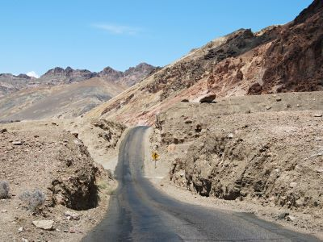
Rick Cooper, CC BY 2.0, via Wikimedia Commons

Artist's Drive
One-way, nine mile drive that passes through eroded, colorful desert hills
One-way, nine mile drive that passes through eroded, colorful desert hills
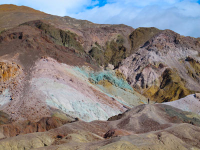
Rick Cooper, CC BY 2.0, via Wikimedia Commons
Artist's Palette
Vibrant geological formation featuring multicolored hills created by the oxidation of volcanic minerals.
Badwater Basin
Salt flat adjacent to the Black Mountains that descends to the lowest elevation in North America at 282 feet below sea level
Dante's View
Viewpoint where visitors can see the central part of Death Valley from a vantage point 5,500 feet above sea level

Paul Hermans, CC BY-SA 3.0, via Wikimedia Commons

Devil's Golf Course
Immense area of rock salt eroded by wind and rain into jagged spires. So incredibly serrated that "only the devil could play golf on such rough links"
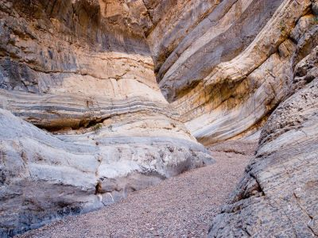
Rick Cooper, CC BY 2.0, via Wikimedia Commons
Fall Canyon
Remote desert canyon featuring towering limestone walls, colorful rock formations, and seasonal wildlife along a rugged hiking route.
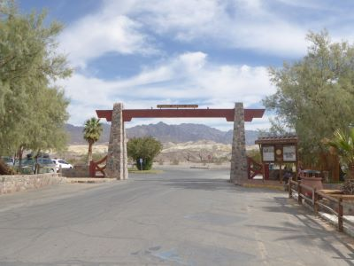
Rick Cooper, CC BY 2.0, via Wikimedia Commons
Furnace Creek
Desert outpost offering visitor services, exhibits, and ranger programs amid one of the most extreme environments on Earth.
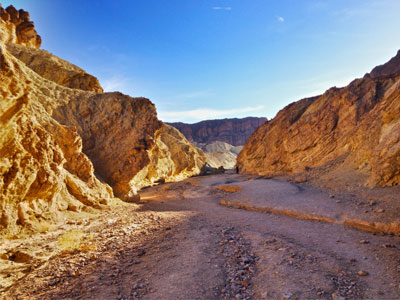
Paul Hermans, CC BY-SA 3.0, via Wikimedia Commons
Golden Canyon, Gower Gulch, and Badlands Loop
A labyrinth landscape of golden colored hills and winding narrow canyons create hiking options ranging from easy strolls to strenuous adventures
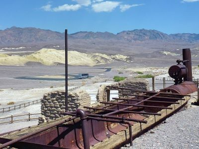
Paul Hermans, CC BY-SA 3.0, via Wikimedia Commons; Image Size Adjusted
Harmony Borax Works
Historic industrial site preserving the remains of a nineteenth-century borax processing operation that helped support mining and transportation across the Mojave Desert.
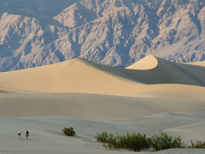
Tuxyso / Wikimedia Commons
Mesquite Flat Sand Dunes
Dunes at the northern end of the valley floor and nearly surrounded by mountains on all sides. Due to their easy access dunes have been used to film sand dune scenes for several movies including films in the Star Wars series
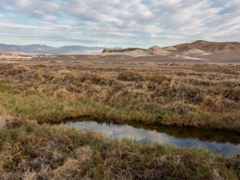
Wilson44691, CC0, via Wikimedia Commons

Salt Creek
Seasonal desert stream supporting rare pupfish and other wildlife along a short interpretive boardwalk trail.

Wilson44691, CC0, via Wikimedia Commons
Scotty's Castle
Spanish-style mansion built in the 1920s featuring elaborate architecture, historic furnishings, and tales of eccentric desert living.
Stovepipe Wells
Desert outpost offering lodging, dining, and visitor services surrounded by sand dunes and rugged mountain landscapes.
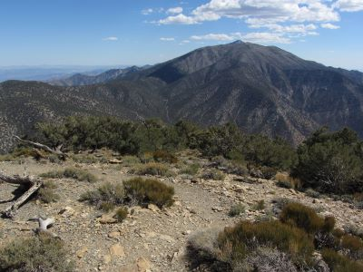
Wilson44691, CC0, via Wikimedia Commons
Telescope Peak
Highest point within Death Valley National Park. From atop this desert mountain one can see for over one hundred miles in many directions, including west to Mount Whitney, and east to Charleston Peak
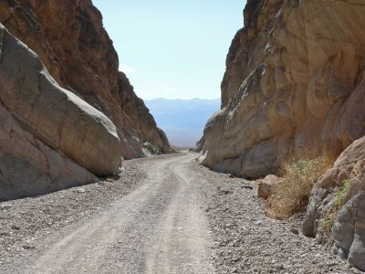
Wilson44691, CC0, via Wikimedia Commons
Titus Canyon
Remote backcountry drive through towering limestone cliffs, fossil beds, a ghost town, and narrow canyon walls carved by ancient floods.
Twenty Mule Team Canyon
Route through multicolored badlands where teams of eighteen mules and two horses attached to large wagons that transported borax out of Death Valley from 1883 to 1889
Ubehebe Crater
Large volcanic crater of the Ubehebe Craters volcanic field in the northern half of Death Valley
large volcanic crater of the Ubehebe Craters volcanic field in the northern half of Death Valley
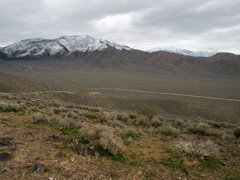
Greg Willis from Denver, CO, usa, CC BY-SA 2.0, via Wikimedia Commons
.jpg){kind=link}
Wildrose Peak
Summit hike yields breathtaking 360 degree views of the Mojave Desert and Basin-Range topography
Zabriskie Point
Elevated overlook offering panoramic views of eroded badlands, colorful rock formations, and the iconic Manly Beacon.
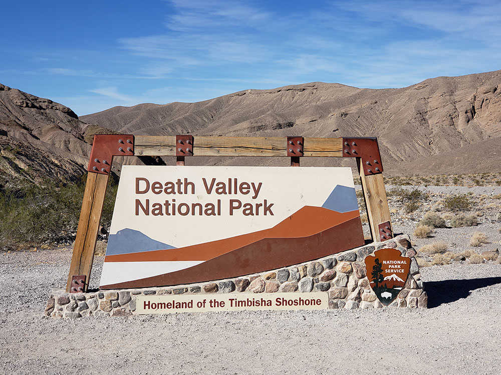
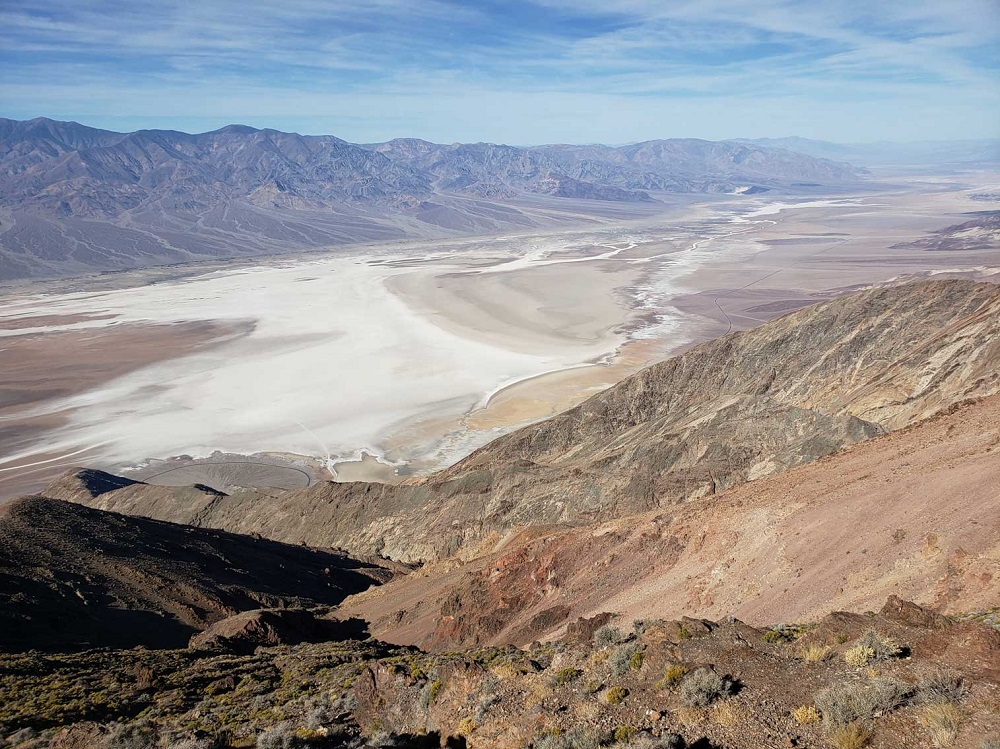